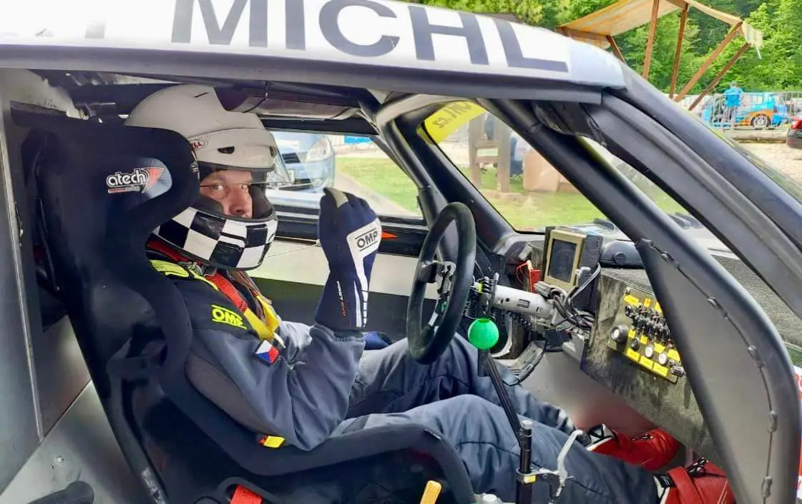
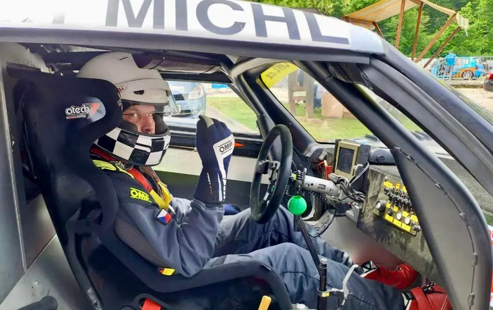
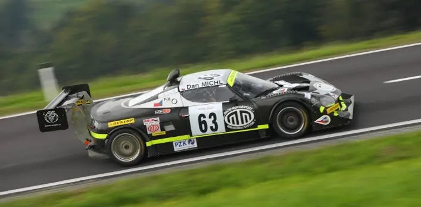
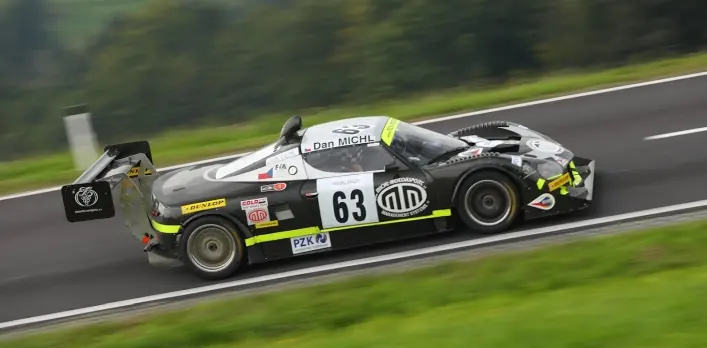
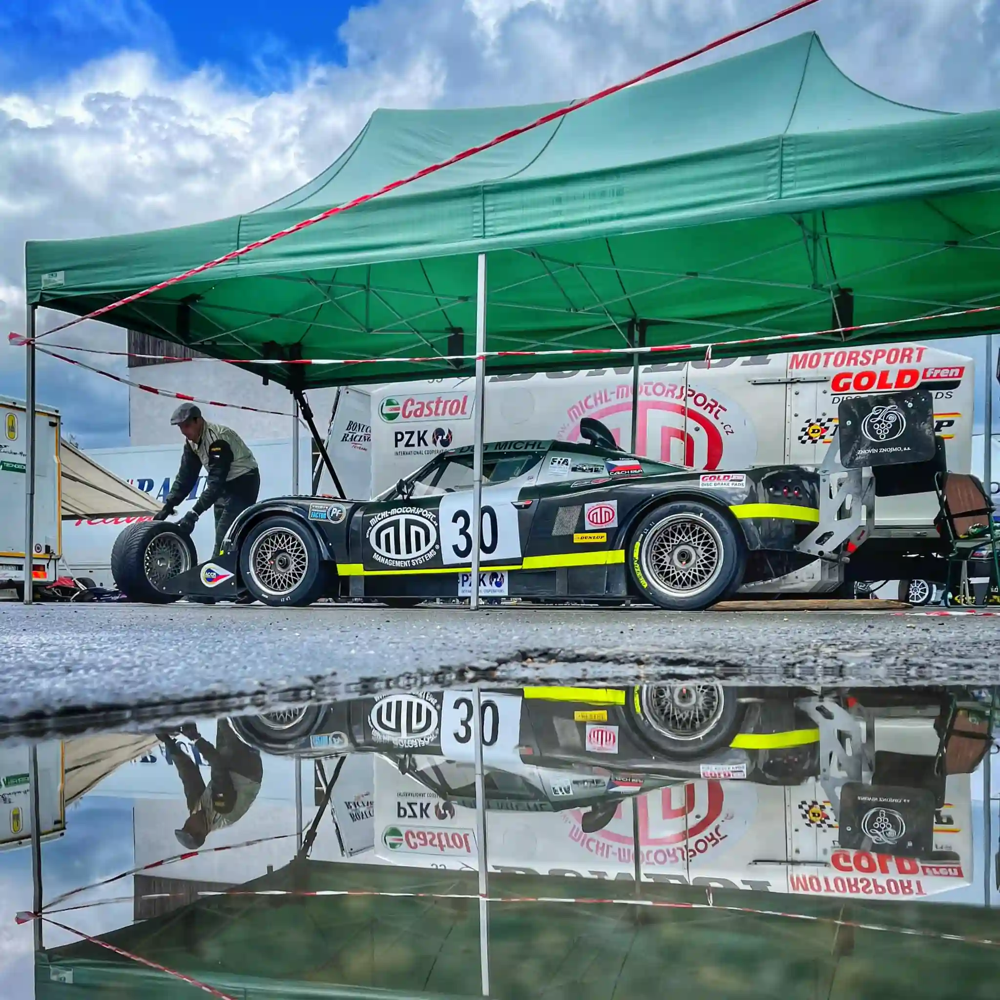
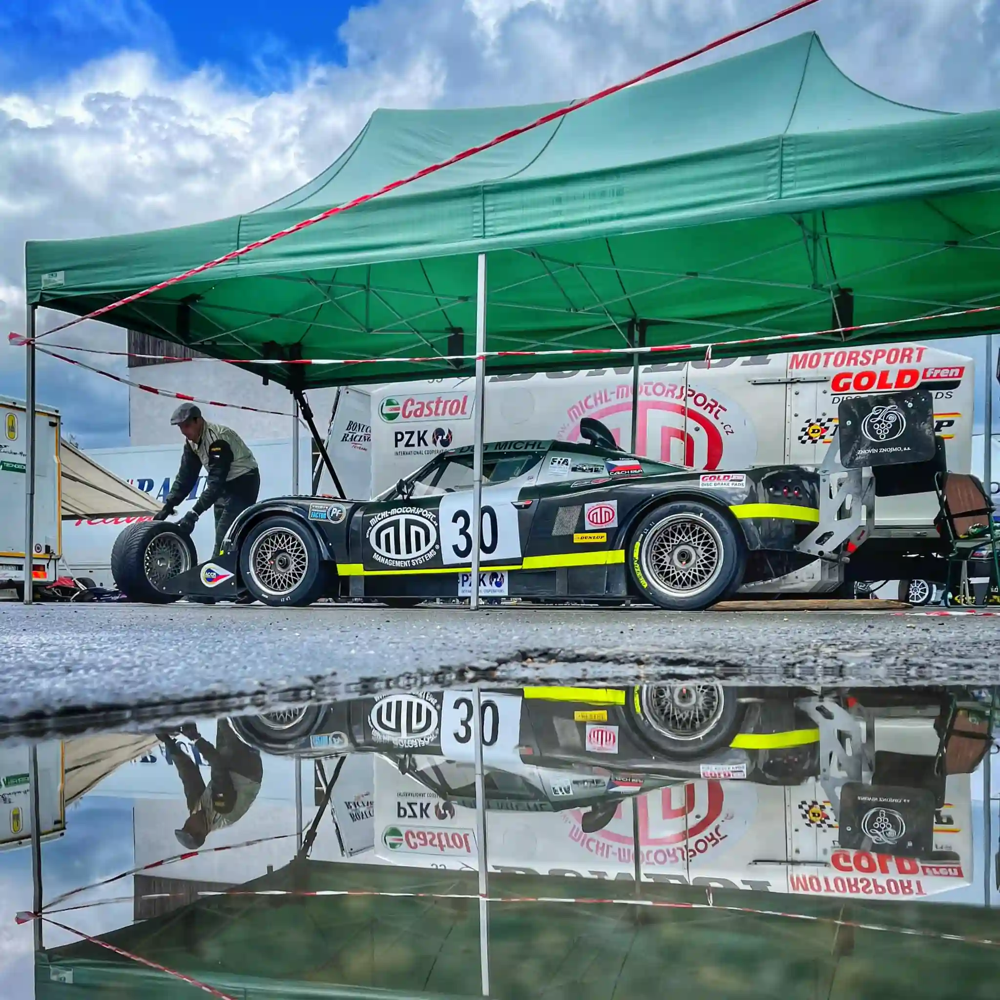

Aktuální sezóna
V roce 2024 můžete Dana Michla sledovat na evropských kopcích, kde se se svým vozem Lotus Elise účastní vrchařské série FIA International Hill Climb Cup a bojuje v kategorii 1, více na Facebooku.


Pro rok 2023 se stal Dan Michl v rámci evropské vrchařské série FIA International Hill Climb Cup vítězem Poháru FIA. I letošní sezóna byla poměrně krátká, ale náročná, a listopadové vyhlášení výsledků a předávání pohárů v portugalské Braze bylo jejím vyvrcholením.


Sezóna 2022 patřila mezi nejkratší kompletní závodní sezóny, v rámci FIA International Hill Climb Cupu se odjely pouze čtyři závody. Dan Michl mimo jiné díky vítězství v německém Osnabrücku opět vybojoval titul a stal se vítězem Poháru FIA v kategorii 1.


Krátká a náročná sezóna 2021 odstartovala u nás, na zkrácené verzi Ecce Homo ve Šternberku, a Dan Michl si odsud odvezl první body do seriálu Mistrovství ČR. V rámci sezóny se účastnil i zkráceného Poháru FIA International Hill Climb, kde nakonec skončil na druhém místě.
Více na Facebooku
Kontakty:
+420 5 41 42 43 44
PO - PÁ 7:30 - 17